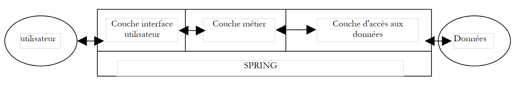

6. 使用 Spring 配置三层应用程序
本文将通过一个示例，探讨如何利用 Spring 配置三层应用程序。此类应用程序的常见示例是 Web 应用程序。
6.1. 问题
我们希望构建一个具有以下结构的三层应用程序：
 |
- 通过使用接口，使三层相互独立
- 三层的集成将由 Spring 负责
- 将为三个层分别创建独立的包，分别命名为 [control]、[domain] 和 [dao]。另外，[tests] 包将包含测试应用程序。
6.2. 数据访问层
DAO层将实现以下接口：
Namespace istia.st.spring3tier.dao
Public Interface IDao
' 在层中执行某项操作 [dao]
Function doSomethingInDaoLayer(ByVal a As Integer, ByVal b As Integer) As Integer
End Interface
End Namespace
- 编写两个类 Dao1Impl1 和 Dao1Impl2，它们实现接口 IDao。 方法 Dao1Impl1.doSomethingInDaoLayer 的返回值为 a+b，而方法 Dao1Impl2.doSomethingInDaoLayer 的返回值为 a-b。
- 编写一个测试类 NUnit 来测试前两个类
6.3. 业务层
业务层将实现以下接口：
Namespace istia.st.spring3tier.domain
Public Interface IDomain
' 在层中执行某项操作 [domain]
Function doSomethingInDomainLayer(ByVal a As Integer, ByVal b As Integer) As Integer
End Interface
End Namespace
- 编写两个类 Domain1Impl1 和 Domain1Impl2，它们实现接口 IDomain。这些类将有一个类型为 IDao 的私有字段，该字段可通过一个公共属性进行初始化。 类 [DomainImpl1] 中的方法 doSomethingInDomainLayer 将 a 和 b 各增加 1，然后将这两个参数传递给接收到的类型为 IDao1 的对象的方法 doSomethingInDaoLayer。 类 [Domain1Impl2elle] 的方法 doSomethingInDomainLayer 将 a 和 b 减去 1，然后执行相同的操作。
- 编写一个测试类 NUnit 来测试前两个类
6.4. 用户界面层
用户界面层将实现以下接口：
Namespace istia.st.spring3tier.control
Public Interface IControl
' 在图层中执行某项操作 [control]
Function doSomethingInControlLayer(ByVal a As Integer, ByVal b As Integer) As Integer
End Interface
End Namespace
- 编写两个类 Control1Impl1 和 Control1Impl2，它们实现接口 IContro1。这些类将有一个类型为 IDomain 的私有字段，该字段可通过一个公共属性进行初始化。 类 [Control1Impl1] 中的方法 doSomethingInControlLayer 将 a 和 b 各增加 1，然后将这两个参数传递给接收到的类型为 IDomain1 的对象中的方法 doSomethingInDomainLayer。 而类 [Control11Impl2] 的方法 doSomethingInControlLayer 则会先将 a 和 b 减去 1，然后执行相同的操作。
- 编写一个测试类 NUnit 来测试前两个类
6.5. 与 Spring 的集成
- 编写一个 Spring 配置文件，用于决定前三个层级各自应使用哪些类
- 编写一个测试类 NUnit，使用不同的 Spring 配置，以突出所编写应用程序的灵活性
- 编写一个独立应用程序（main方法），向已实现的IControl接口中的[doSomethingInControlLayer]方法传递两个参数，并显示该接口渲染的结果。